Starting file
- Raw BIDS
- Exclusion subject list (from clinical trial)
fmriprepHTML reports, BOLD/fieldmap distortion-correction views, and automated motion and signal metrics such as FD and tSNR (these can often be found infigures/from pipeline outputs)- FreeSurfer structural QC outputs and modality-specific derivatives
- Study tracking notes (from study leads and staffs)
- REDCap exports
Output file
- Keep the original BIDS dataset unchanged (read-only!).
- Write QC decisions to separate artifacts and analysis tables.
- Minimum output:
- a clean subject-session (at the single-sample level) inclusion/exclusion ledger (will be frozen prior to analysis starts)
- explicit reasons for exclusion (clearly state if exclusions are image-based or clinic-based)
Clinic-based Inclusion/Exclusion Criteria
- Apply non-imaging exclusions before image QC.
- Common reasons:
- withdrew from the study
- did not meet trial requirements
- ineligible per clinical review
- session should not be analyzed based on study team notes
- additional exceptions discovered from REDCap or after checking with study staff
- Tips: Record these in a subject-session ledger so later imaging exclusions do not overwrite the clinical history.
How this was tracked in Brains
- The Brains freeze combined:
- full-participant exclusions
- session-level exclusions
- tracking-workbook notes
- REDCap-derived information
- imaging QC failures
- The inclusion ledger and subject manifest were treated as the authoritative record of why a subject or session was kept or dropped.
- Tips:
- do not collapse clinic-based and image-based exclusions into one vague label
- keep the reason explicit so the final sample can be reproduced later
Structural-Based Exclusion (QC)
- Structural QC was done in 2 parts:
- manual review of structural processing quality
- executable freeze rules used for the final structural analysis sample
What to exclude
- Gross mismatch between the T1 image and the cortical ribbon / white-matter surfaces
- Widespread segmentation failure rather than a small local imperfection
- Catastrophic alignment failures
- Structural images that are so compromised that downstream registration cannot be trusted
Visual QC Examples
Reject / Flag
|
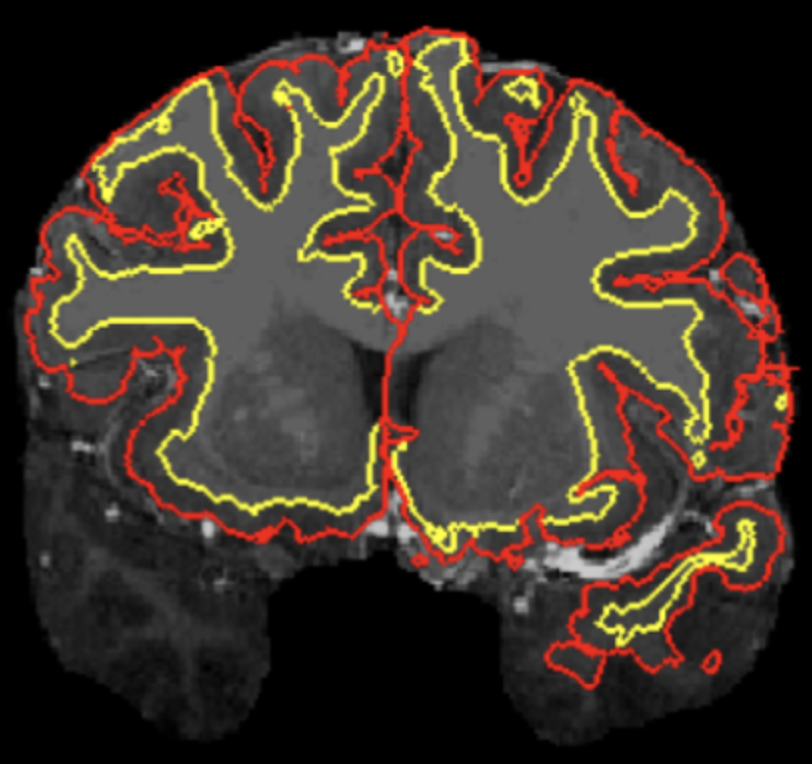 Cortical surface reconstruction inaccurateVerdict: Reject. The cortical ribbon is grossly misaligned in the temporal lobes, so downstream registration cannot be trusted. |
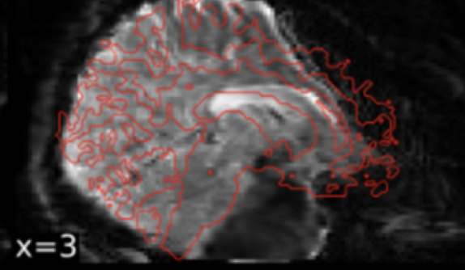 Segmentation or underlying T1 looks comically badVerdict: Reject / flag for review. This is the kind of catastrophic failure that should be excluded even if it does not match a canned example exactly. |
Accept With Caveats
|
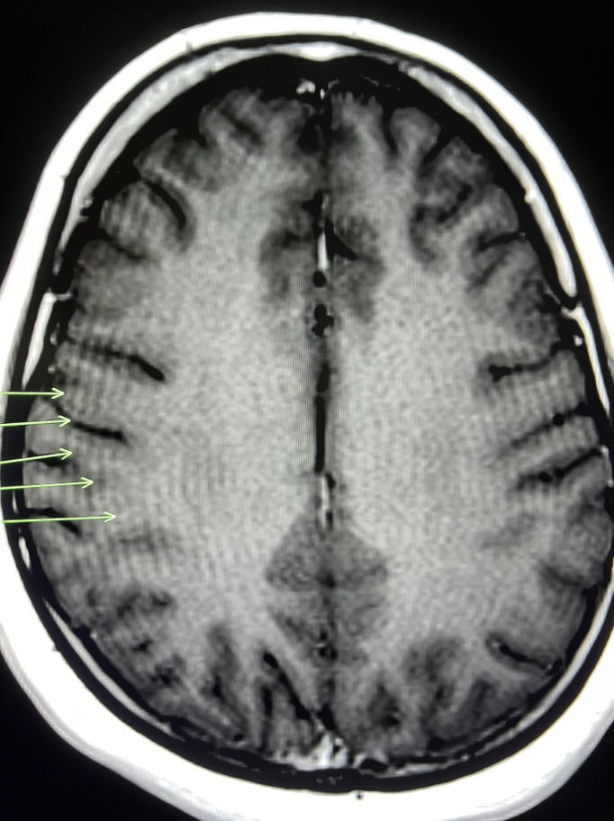 Gibbs ringingVerdict: Conditional accept. Heavy ringing should usually prevent a top score, but it can still pass if the gray/white matter boundary is otherwise well-tracked. |
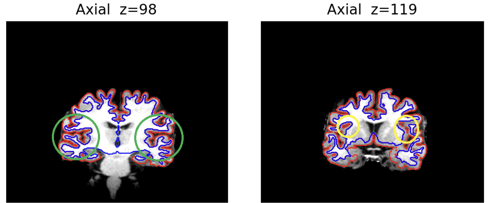 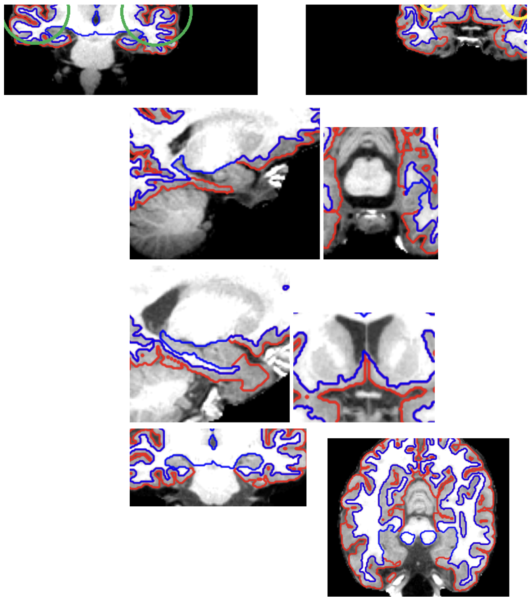 Images that may falsely appear to be badVerdict: Usually accept. Use anatomical context before failing scans around sulcal spaces, basal ganglia, hippocampus, or amygdala. Above are both examples of views that can look wrong if judged slice-by-slice without considering the surrounding anatomy. For instance, the isolated circles on the right seem odd and potentially erroneous, but they are actually part of a normal sulcal space that persists across multiple slices in x, y and z. |
Accept / Normal Variants
|
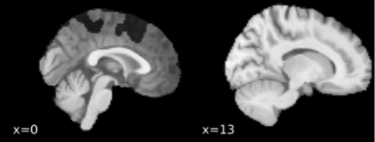 Mid-sagittal slice can look badVerdict: Accept. Increased interhemispheric space at the midline is not itself a failure. |
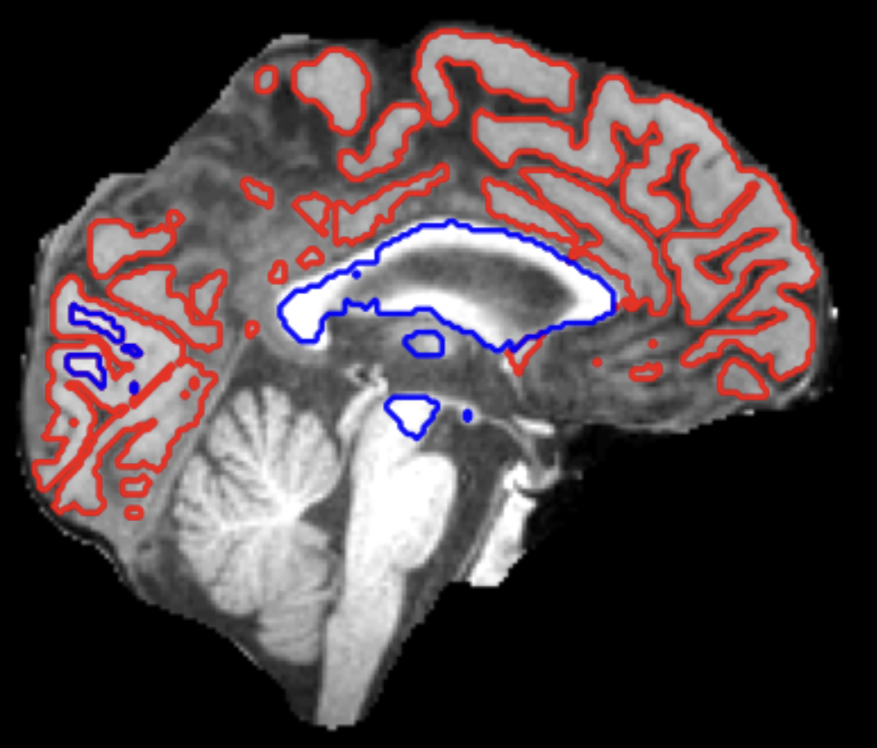 Longitudinal midline views can look discontinuousVerdict: Accept. When a slice captures lots of CSF between hemispheres, irregular ribbons can be a sign that FreeSurfer is behaving correctly. |
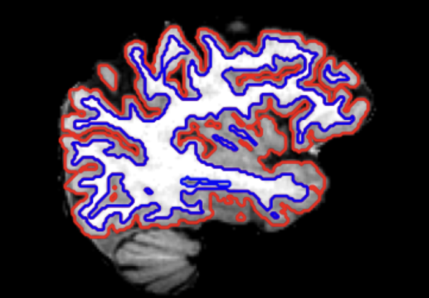 Good segmentationVerdict: Accept. Gray and white matter boundaries are well captured, even if the image is not absolutely perfect. |
Brains Structural QC
Details
- Manual rating scale from the archived Brains QC notes:
1: extremely poor processing; unusable for downstream alignment2: sub-par image/alignment/surface with widespread errors3: mostly good; minor deviations are exceptions4: pristine image, template alignment, and surface reconstruction
- Structural artifacts identified as failures:
- cortical ribbon far off the anatomy
- poor temporal-lobe segmentation
- catastrophic structural failures even if they do not match a canned example
- Structural patterns identified as not automatic failures:
- midsagittal gaps between hemispheres
- imperfect-looking basal ganglia / hippocampus / amygdala boundaries in this cortical QC view
- small bubble-like sulcal spaces that are anatomically continuous across slices
- Gibbs ringing, if gray/white boundary detection still looks good
- Executable Brains structural QC rules:
- session must not be in the manual exclusion list, either clinic- or imaging-based
- auto QC pass:
EulerTotal < 100
Helpful resources
- Sherlock OnDemand
Sherlock OnDemand. This was the main access point for downloadingfmriprepreports,figures/, and other QC materials from the Brains project directories. - Data team Next Week's Data
Internal data-team tracking sheet documenting data-quality issues observed during the trial. Useful for cross-checking subject/session-specific notes alongside the structural QC review. - MRI QC background paper
Background reading on why MRI image-quality problems can create misleading findings and why QC matters so much for downstream inference. - Gibbs artifact reference
MRIQuestions overview of Gibbs artifact / Gibbs ringing. Helpful when deciding whether visible ringing is severe enough to compromise gray/white boundary detection. - Hippocampal labeling reference 1
Hippocampal labeling reference suggested in the Brains QC notes for reviewing medial temporal lobe anatomy and avoiding false positives during structural QC. - Hippocampal labeling reference 2
Additional hippocampal labeling / anatomy reference suggested in the Brains QC notes for checking whether odd-looking medial temporal segmentations are actually expected.
Functional Imaging-Based Exclusion (QC)
- Functional QC in Brains relied on both automated metrics and manual review.
- Automated metrics such as FD (head motion) and tSNR (signal) were considered useful for masking/censoring and for detecting poor scans.
- Manual QC was intentionally narrower: catch egregious failures that automated metrics could miss.
What to exclude
- Obvious preprocessing failures that make the BOLD data unreliable
- Catastrophic susceptibility distortion correction errors
- Scan/session combinations with severe functional problems that cannot be rescued by ordinary censoring or masking
Visual QC Examples
Reject / Fail
|
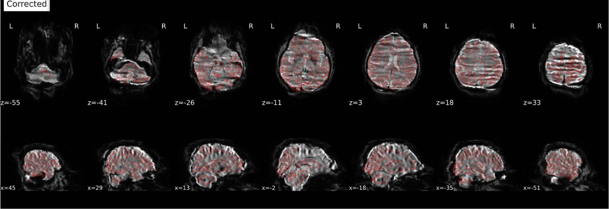 Improper susceptibility distortion correction: catastrophicVerdict: Reject. This occurred when BOLD images were encoded in ARS coordinates but fieldmaps were in RPI.
|
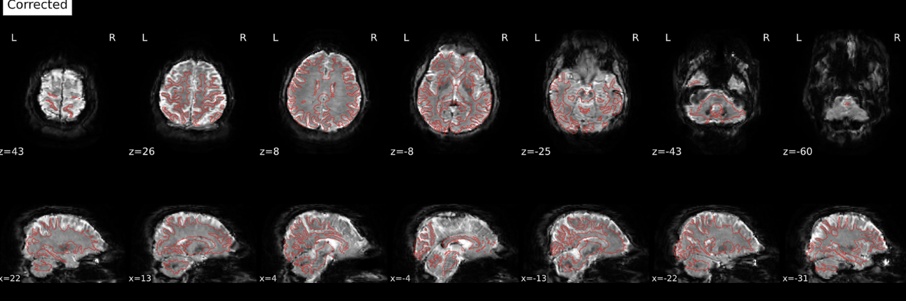 Improper susceptibility distortion correction: still bad, but subtlerVerdict: Reject. This occurred when both BOLD and fieldmaps were encoded in ARS; the image is better than the catastrophic case but still not acceptable.
|
Accept / Pass
|
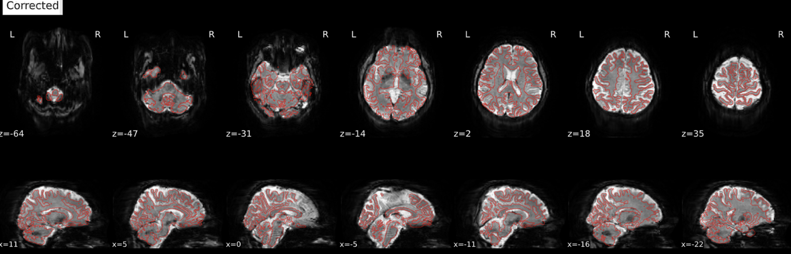 Proper susceptibility distortion correctionVerdict: Accept. Distortion correction worked when both BOLD and fieldmaps were correctly treated as RPI. In Brains, all scans were acquired RPI/RPI, but older dcm2niix versions sometimes mislabeled GE scans as ARS, which then broke phase-encoding correction.
|
Brains Functional QC
Details
- Review was binary rather than continuous:
- pass if all functional scans for the subject passed review
- fail if at least one functional scan did not pass
- If a subject failed, the notes recorded the exact bad scans:
- session
V2-V10 - scan number
rs1-rs4
- session
- Manual review focused especially on susceptibility distortion correction problems rather than trying to manually rate every small quality difference
- Automated metrics:
- FD for head motion
- tSNR for signal quality
- The key Brains-specific functional issue was susceptibility distortion correction failure:
- catastrophic failures occurred when BOLD images were encoded in
ARScoordinates but fieldmaps were inRPI - subtler but still bad failures occurred when both BOLD and fieldmaps were encoded in
ARS - distortion correction worked when both were correctly treated as
RPI
- catastrophic failures occurred when BOLD images were encoded in
- Technical issues:
- all scans were acquired
RPI/RPI - older
dcm2niixversions sometimes mislabeled GE scanner data asARS - because phase-encoding direction was interpreted relative to coordinates, this coordinate error caused bad distortion correction
- all scans were acquired
Helpful resources
- Sherlock OnDemand
Sherlock OnDemand. Used to access the BrainsfmriprepHTML reports and associatedfigures/for manual BOLD QC. - Data team Next Week's Data
Internal data-team tracking sheet documenting data-quality issues observed during the trial. Useful for checking session-level notes and flagged concerns while reviewing functional QC decisions. - Susceptibility artifact reference
MRIQuestions overview of susceptibility artifact. Useful background for understanding the type of frontal and inferior distortions the Brains functional QC was checking. - FieldTrip coordinate-system FAQ
FieldTrip coordinate-system FAQ. This is directly relevant to the Brains issue where BOLD and fieldmaps were mislabeled inARSvsRPI, which then broke distortion correction.
Additional Sanity Checks
Scanner- and Site-Dependent Artifacts
- Always check whether site, scanner, conversion software, or protocol changes introduced systematic artifacts.
- Do this before finalizing the analysis sample, and document the check in the freeze record.
What to verify
- scanner vendor / model / upgrade timing
- dcm2niix version or other DICOM-to-BIDS conversion changes
- orientation labels and phase-encoding direction
- fieldmap presence and correct pairing with BOLD scans
- special session naming issues, missing folders, or “do not use” notes in the file structure
Brains-specific scanner/site checks
- Functional QC revealed a scanner/conversion-specific issue:
- older
dcm2niixversions sometimes mishandled GE data and assignedARScoordinates to scans that were actuallyRPI - this broke susceptibility distortion correction because the phase-encoding direction was interpreted in the wrong coordinate frame
- older
- Structural workflow also included a scanner-upgrade sensitivity check:
- freeze a list of scans acquired before the upgrade
- run the upgrade comparison on the already matched structural analysis sample, not on the raw full dataset
- compare pre- vs post-upgrade effects with saved model summaries
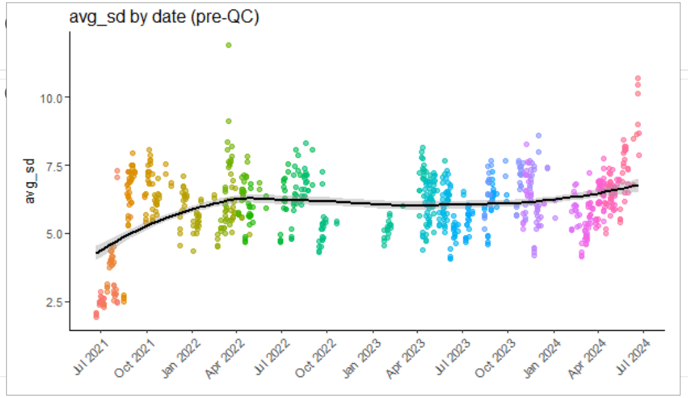
- Example: this plot summarizes scanner-upgrade-related artifacts observed in standard-space fMRI outputs and can be used to document pre/post-upgrade sensitivity checks.
- Tips:
- keep a scanner-change log; stay up-to-date on facility announcements or news
- track conversion software versions
- verify orientation and distortion-correction behavior visually in reports
- save an explicit pre/post-upgrade registry and sensitivity analysis
Helpful resources
- CNI Wiki main page
CNI facility wiki with technical information for users, including getting started materials, troubleshooting, MR hardware and protocols, data access, and QA-related pages. This is a good first place to check for facility-specific procedures and documentation that may explain site-dependent artifacts. - CNI facility news example: Scan Data Acquired From August 2-11
CNI facility-news post from August 20, 2021 describing a coherent MR noise source that was ultimately traced to an environmental issue in the facility. This is a useful example of where site-dependent artifacts may be documented outside the imaging dataset itself. - CNI facility news example: Scan Data Acquired From August 19-23
CNI facility-news post from August 26, 2021 documenting the August 17-18, 2021 scanner upgrade and the post-upgrade artifact issue that affected some sequences. Useful for checking whether known upgrade windows overlap with acquisition dates in your study.
Timepoint Harmonization
- Pair each imaging session with the correct clinical assessment and treatment timepoint.
- This mattered because imaging, clinician ratings, self-report ratings, and TMS treatment did not always happen on the exact same calendar day.
- Instead of assuming event labels were already synchronized, the workflow created an explicit date-alignment layer that could be audited later.
Visual QC of timepoint alignment
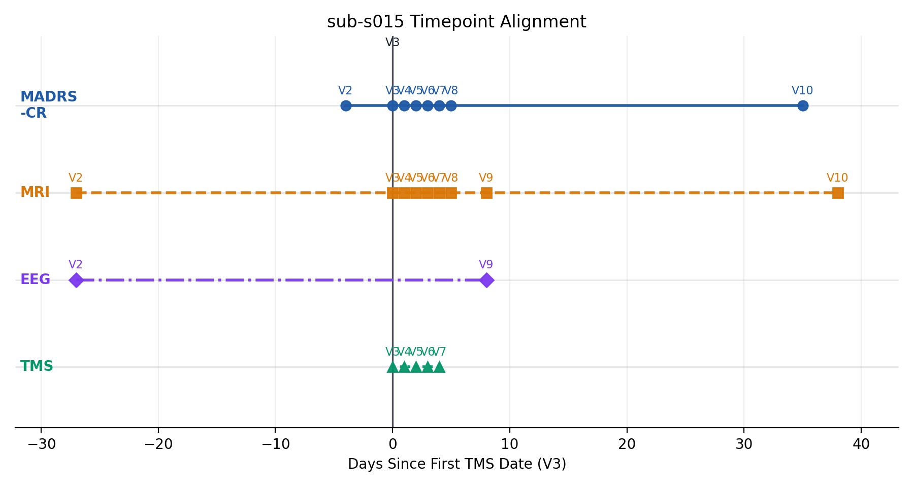
- Example: this plot illustrates event timepoints of patient
s015from the Brains trial, whose baseline MADRS was evaluated 23 days after baseline neuroimaging visit. - Clinician notes explained: "patient became numb with medication dose increase during screening, elected to discontinue medication and then pursue treatment with us"
- Tip: flag mismatched date assignments, missing date fields, and suspiciously large gaps between treatment, scan, and symptom assessment
Summary
- Basic workflow:
- preprocess and curate imaging data to BIDS organization
- apply clinic-based inclusion/exclusion first
- build a subject-session ledger
- run structural QC with explicit automated and manual rules
- run functional QC to catch egregious preprocessing failures, especially distortion-correction errors
- QC additional sources of bias, such as scanner and software versioning, timestamp harmonization, etc.; document additional artifacts separately
Helpful Resources
- Sherlock OnDemand
Main access point for downloading Brainsfmriprepreports,figures/, and other QC materials from the project directories. - Data team Next Week's Data
Internal data-team tracking sheet for data-quality issues observed during the trial, useful for cross-checking subject/session-specific notes and flagged concerns. - MRI QC background paper
Background reading on why MRI image-quality problems can create misleading findings and why QC matters for downstream inference. - Gibbs artifact reference
MRIQuestions overview of Gibbs artifact / Gibbs ringing, useful when judging whether ringing compromises gray/white boundary detection. - Hippocampal labeling reference 1
Hippocampal labeling reference suggested in the Brains QC notes for reviewing medial temporal lobe anatomy and avoiding false positives during structural QC. - Hippocampal labeling reference 2
Additional hippocampal labeling / anatomy reference suggested in the Brains QC notes for checking whether odd-looking medial temporal segmentations are expected. - Susceptibility artifact reference
MRIQuestions overview of susceptibility artifact, useful background for the frontal and inferior distortions checked during Brains functional QC. - FieldTrip coordinate-system FAQ
Coordinate-system reference relevant to the Brains issue where BOLD and fieldmaps were mislabeled inARSvsRPI, breaking distortion correction. - CNI Wiki main page
CNI facility wiki with getting started materials, troubleshooting, MR hardware and protocols, data access, and QA-related pages. - CNI facility news example: Scan Data Acquired From August 2-11
CNI facility-news post from August 20, 2021 describing a coherent MR noise source that was traced to an environmental issue in the facility. - CNI facility news example: Scan Data Acquired From August 19-23
CNI facility-news post from August 26, 2021 documenting the August 17-18, 2021 scanner upgrade and the post-upgrade artifact issue that affected some sequences. - Recruitment Tracking Sheet
Helpful resource for verifying screening ID, enrolled participant ID, and additional retreatment or OL ID with timestamps for scheduled visits.fmriprepreports,figures/, and other QC materials from the project directories.